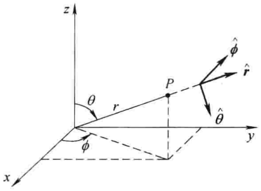

不惑
主页
导航
坐标系
球坐标系

点P的球坐标为：\((r,\theta,\phi)\).
\(r\)：到原点的距离（位置矢量的大小）
\(\theta\)：极角，位置矢量与z轴的夹角
\(\phi\)：方位角，位置矢量在xy平面投影与x轴的夹角
球坐标\((r,\theta,\phi)\)与直角坐标\(x,y,z\)的关系为：
$$x = r\sin\theta\cos\phi$$ $$y = r\sin\theta\sin\phi$$ $$z = r\cos\theta$$